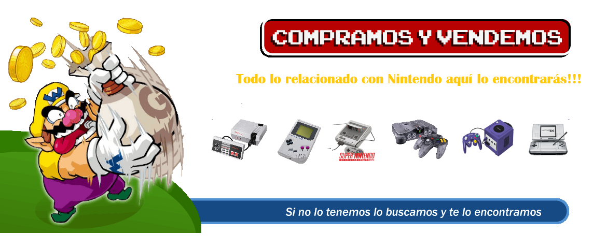

retrojuegosVLC@retroVLC.com

Tus juegos retro de Nintendo

Hace cinco años, nació un sueño impulsado por una pasión inquebrantable por los juegos retro.
Desde la infancia, los videojuegos han sido mi refugio, mi fuente de alegría y aventura. Cada pixel, cada melodía y cada personaje representan un vínculo
con mi pasado y un portal hacia la nostalgia.
Esta pasión, lejos de desvanecerse con el tiempo, solo se fortaleció con los años. La idea de compartir esta pasión con otros amantes de los juegos retro
se convirtió en una misión. Así, hace cinco años, decidí emprender un viaje que cambiaría mi vida para siempre: crear un espacio donde la magia de los juegos
retro pudiera ser revivida una y otra vez.
El camino no siempre fue fácil. Hubo desafíos, obstáculos y momentos de incertidumbre, pero cada paso fue guiado por la convicción de que estaba
persiguiendo mi verdadera pasión. Desde conseguir los jueos más icónicos hasta restaurar viejas consolas, cada esfuerzo fue un tributo a la rica historia
de los videojuegos retro.
Hoy, al mirar hacia atrás, puedo decir con orgullo que nuestro negocio ha crecido y prosperado, pero lo más importante, hemos creado una comunidad de
jugadores apasionados que comparten el amor por los juegos retro. Cada cliente que entra por nuestras puertas es más que eso, es un compañero de
viaje en esta aventura interminable.
En esta página web, no solo encontrarás una amplia selección de juegos retro, sino también un lugar donde compartir historias, recuerdos y experiencias.
Te invitamos a sumergirte en la magia de los videojuegos clásicos y ser parte de nuestra historia en constante evolución.
¡Gracias por ser parte de nuestro viaje!